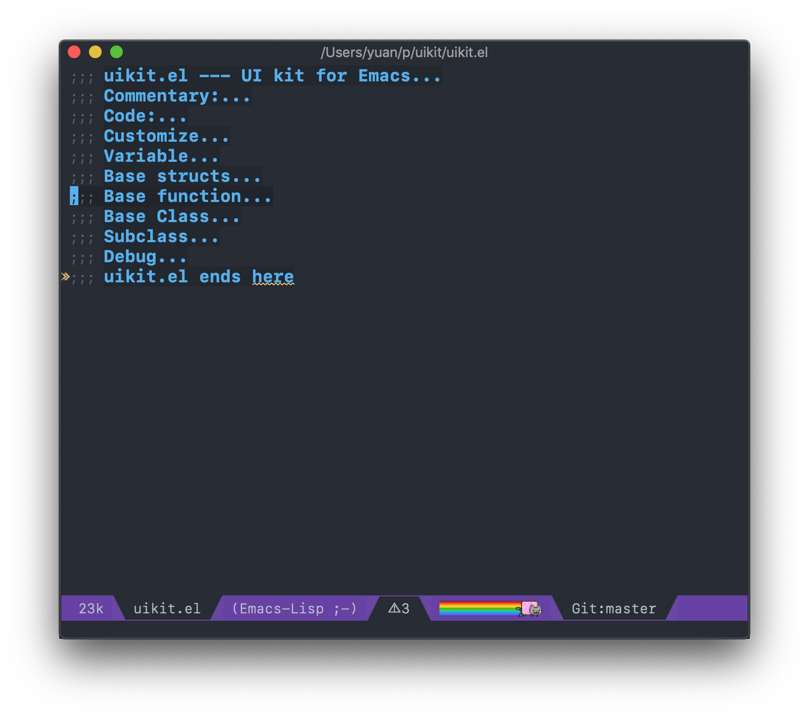
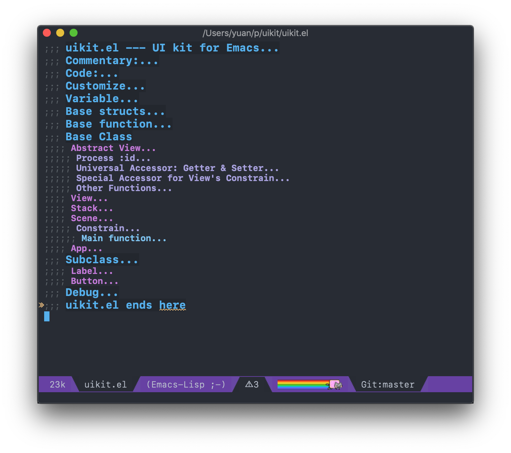
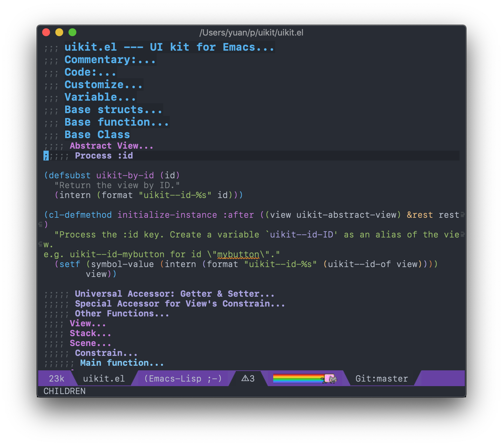

Org Mode in Source File
Table of Contents



This nice package outshine brings the look and feel of Org Mode into any major mode as long as there is comment syntax defined.
How Does It Work
Enable
M-x outline-minor-mode
Headings
Instead of * in Org Mode, use whatever comment syntax defined in the major mode.
In emacs-lisp-mode, ;;; is top level heading, ;;;; the second, and so on.
Folding
Since outshine is no more than a extension of outline-minor-mode, all the outline-minor-mode commands still apply. To name a few:
outline-show-all outline-hide-body outline-toggle-children
outshine binds C-M-i to outshine-cycle-buffer, I found it convenient.